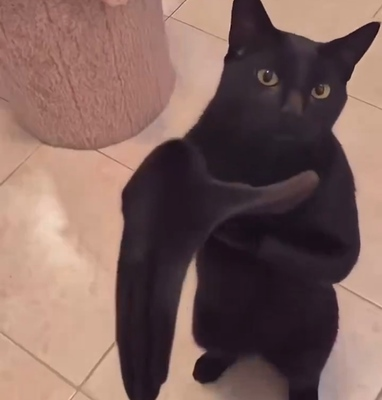
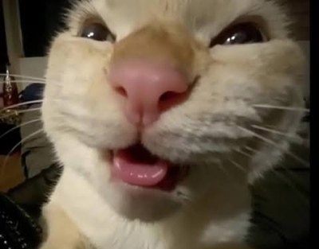
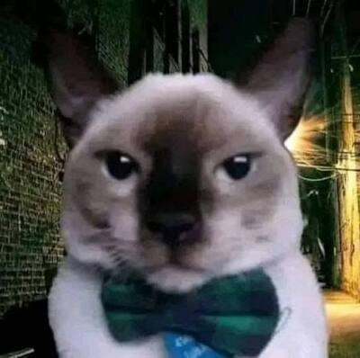
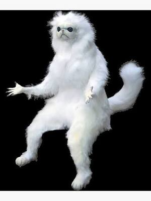
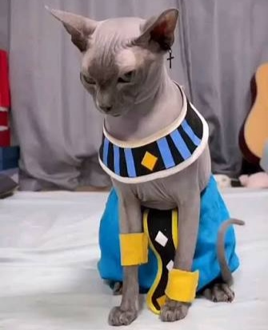
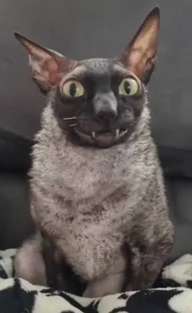
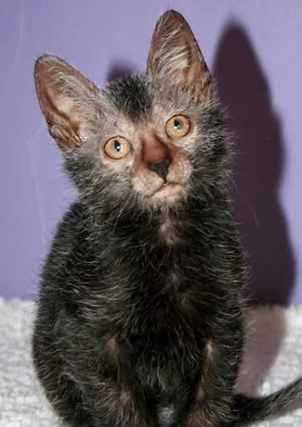

Fotos de gato mãozudo
Imagem dessa anomalia bixanês ae

Foto do gato laranja
Imagem do brincalhão

Qual comida o Garfield come?
- ( )Lasanha quatro queijos
- ( )Lasanha bolonhesa
- ( )Lasanha catupiry
- ( )Lasanha presunto e queijo
- ( )Lasanha estrogonofe
- ( )Lasanha carne moída
Responda:
Lista de raças
- Siamês
- Persa
- Sphynx
- Cornish Rex
- Lykoi




